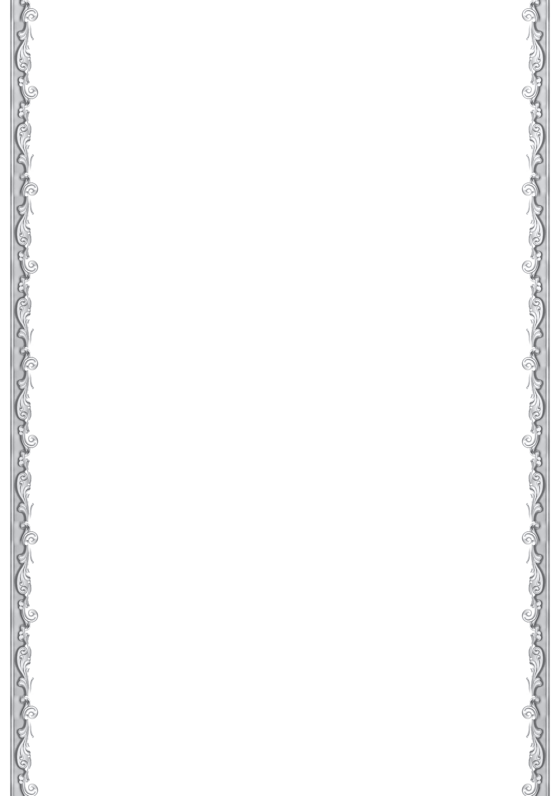

שימסור בשמו לבני ישיבת פוניבז׳
״שהקב״ה עשה חוזה, שהתורה והתפילה קשורים זה בזה, ואי אפשר בשום פנים ואופן, להיות תלמיד חכם אמיתי בלי להשקיע בתפילה״
״ואין ספק שלימוד הלכות תפילה חיובן קודם לכל הלימודים כי הם נוהגין ג״פ בכל יום״.
(אורחות יושר – ערך התפילה)
״... לפעמים ילד אין לו טעם בתפילה... ולא קיבל חינוך כראוי על תפילה, צריכים ללמוד איתם הלכות תפילה, ולהסביר להם מה זה תפילה, ומהי הקדושה שיש בתפילה, שיבינו את הרווח בזה...״
(מתוך דברי רבינו בערך חינוך תפילה)
״יש ללמוד הלכות הנוגעים למעשה בתפילה, ולהקפיד לקיימם דבר יום ביומו״
״בוודאי לימוד הלכות תפילה חשוב ביותר, אם היו יודעים את מעלת התפילה וגדלותה היו רודפים אחריה לקיימה כראוי וכיאות בכל הכח״
״הנה התפילה צריכה חיזוק תמיד וודאי שהעוסק בהלכות תפילה ושערי הלכה ועבודה בספרי היראה, מביאה להתעוררות בתפילה ולעבודת התפילה מתוך קרבת השי״ת וכמו שבישיבתנו הקדושה.״
״ראוי מאד לחזק המפעל הגדול הזה של ארגון ״ברומו של עולם״ ולסייע בידם בכל האפשר, וגם לסייע לצרף עוד בתי מדרשות של קהילות בני התורה למפעל זה, למען העמיד עמוד העבודה ברוממות הנפש, דבר חשוב וגדול ונחוץ מאד להעמיד את יסוד העבודה אצל בני התורה, שעמוד העבודה בדורנו הוא התפילה״
״וכמו שכל אחד מבין שהסנדלר אינו יכול לעשות עבודתו בלי פטיש ומסמר, ונגר אינו יכול לעשות עבודת הנגרות בלי מסור, כך תפילת האדם כלי עבודתו הינו כוונת הלב ואם אינה בכל לבו אינה תפילה״
״התועלת שאדם מקבל מהקשר עם בורא עולם אין תחליף לזה, ואין תחליף לביטחון שאדם מרגיש בזכות זה״
״מי שמתקשר עם בורא עולם יש לו חיים אחרים לגמרי״
״והתוצאות של לימוד הלכות ופירוש התפילה עצומות ונפלאות והדברים חודרים ללב, ומחנכים ונותנים טעם אמיתי לעבודת הלב – לתפילה, ובלי ספק שלמתחנכים כך בנערותם הדברים ישפיעו בס״ד בהמשך הדרך בישיבה גדולה ובהמשך החיים״
״לחזק ולרומם את נושא התפילה – זה פרויקט ענק, אני לא חושב שיש שמחה להקב״ה כהשמחה ששמח בפרויקט הזה״
״ב״ה זכיתי לראות מהנסיון שאין ספק שהעוסקים בהלכות תפילה הרי הם מתעלים בעבודת התפילה, ואינה דומה תפילתם אחר שעסקו בהלכותיה לקודם לזה. מלבד אשר יודעים את ההלכה לנהוג כדת כראוי וכנכון.״